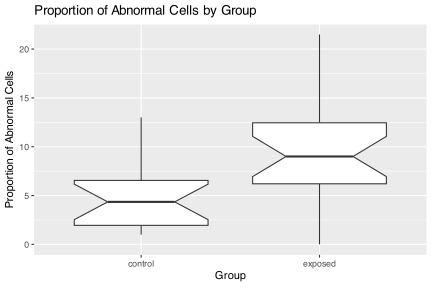
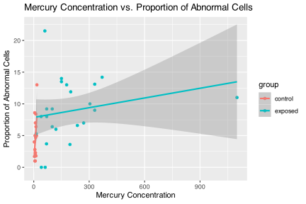
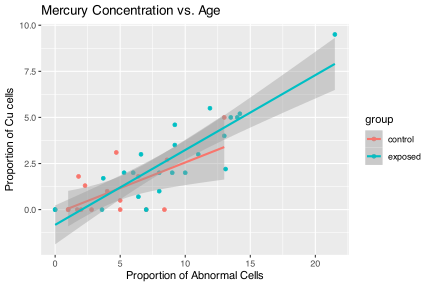
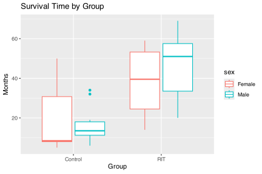
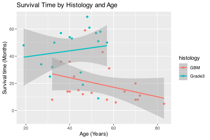
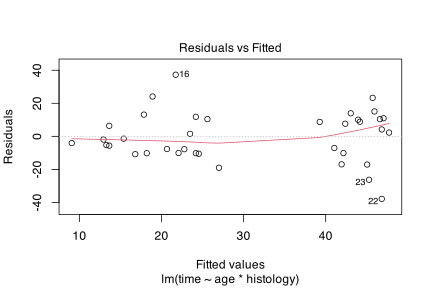
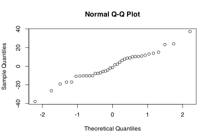
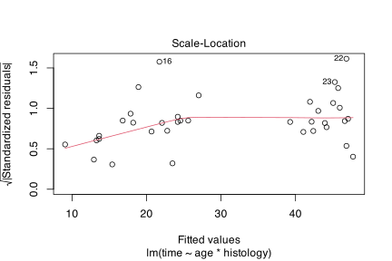

![]()
Honesty Pledge
This assignment requires that you work as an individual and not share your code, results, or discussion with your peers. Penalties and disciplinary action will apply if you are found cheating.
Copy the statement, below, into your document and replace the underscores with your name acknowledging adherence to the UWC’s Honesty Pledge.
I, ____________, hereby state that I have not communicated with or gained information in any way from my peers and that all work is my own.
Instructions
Please carefully adhere to the following guidelines. Non-compliance may result in deductions.
Convert Quarto to HTML: Submit your assignment as an HTML file, derived from a Quarto document. Ensure your submission is a thoroughly annotated report, complete with meta-information (name, date, purpose, etc.) at the beginning. Each section/test should be accompanied by detailed explanations of its purpose.
Testing Assumptions: For all questions necessitating formal inferential statistics, conduct and document the appropriate preliminary tests to check statistical assumptions. This includes stating the assumptions, detailing the procedures for testing these assumptions, and specifying the null hypotheses (\(H_{0}\)). If assumptions are tested graphically, elucidate the rationale behind the graphical method. Discuss the outcomes of these assumption tests and provide a rationale for the chosen inferential statistical tests (e.g., t-test, ANOVA).
State Hypotheses: When inferential statistics are employed, clearly articulate the null (\(H_{0}\)) and alternative (\(H_{A}\)) hypotheses. Later, in the results section, remember to state whether the \(H_{0}\) or \(H_{A}\) is accepted or rejected.
Graphical Support: Support all descriptive and inferential statistical analyses with appropriate graphical representations of the data.
-
Presentation Format: Structure each answer as a concise mini-paper, including the sections Introduction, Methods, Results, Discussion, and References. Though each answer is expected to span 2-3 pages, there are no strict page limits. [Does not apply to questions marked with an *]
Incorporate a Preamble section before the Introduction to detail preliminary analyses, figures, tables, and other relevant background information that doesn’t fit into the main narrative of your paper. This section provides insight into the preparatory work and will not be considered part of the main evaluation.
The Introduction should set the stage by offering background information, establishing the relevance of the study, and clearly stating the research question or hypothesis.
The Methods section must specify the statistical methodologies applied, including how assumptions were tested and any additional data analyses performed. Emphasise the inferential statistics without delving into exploratory data analysis (EDA).
In the Results section, focus solely on the findings pertinent to the hypotheses introduced in the Introduction. While assumption tests are part of the statistical analysis, they need not be highlighted in this section as that is what the ‘Preamble’ section is for. Ensure that figure and/or table captions are informative and self-explanatory.
The Discussion section is for interpreting the results, considering their significance, limitations, and implications, and suggesting avenues for future research. You may reference up to five pertinent studies in the Methods and Discussion sections.
End with a consolidated References section, listing all sources cited across the questions.
Formatting: Presentation matters. Marks are allocated for the visual quality of the submission. This includes the neatness of the document, proper use of headings, and adherence to coding conventions (e.g., spacing).
MARK ALLOCATION Please see the Introduction Page for an explanation of the assessment approach that will be applied to these questions.
Submit the .html file wherein you provide answers to Questions 1–7 by no later than 08:00, Saturday, 13 April 2024. Label the script as follows:
BCB744_<Name>_<Surname>_Final_Integrative_Assessment.html, e.g.
BCB744_AJ_Smit_Final_Integrative_Assessment.html.
Email your answers to Zoë-Angelique Petersen by no later than 08:00 on 13 April 2024 and cc me in.
Question 1: Effects of Mercury-Contaminated Fish Consumption on Chromosomes
Dataset Overview
The dataset mercuryfish, available in the R package coin, comprises measurements of mercury levels in blood, and proportions of cells exhibiting abnormalities and chromosome aberrations. These data are collected from individuals who consume mercury-contaminated fish and a control group with no such exposure. For detailed attributes and dataset structure, refer to the dataset’s documentation within the package.
Objectives
Your analysis should aim to address the following research questions:
Impact of Methyl-Mercury: Is the consumption of fish containing methyl-mercury associated with an increased proportion of cellular abnormalities?
Mercury Concentration and Cellular Abnormalities: How does the concentration of mercury in the blood affect the proportion of cells with abnormalities? Moreover, is there a difference in this relationship between the control group and those exposed to mercury?
Relationship Between Variables: Does a relationship exist between the proportion of abnormal cells (
abnormal) and the proportion of cells with chromosome aberrations (ccells)? This analysis should be conducted separately for the control and exposed groups to identify any disparities.
Answers
- Impact of Methyl-Mercury
group mercury abnormal ccells
1 control 5.3 8.6 2.7
2 control 15.0 5.0 0.5
3 control 11.0 8.4 0.0
4 control 5.8 1.0 0.0
5 control 17.0 13.0 5.0
6 control 7.0 5.0 0.0 # EDA: Boxplot of the proportion of abnormal cells by group
ggplot(mercuryfish, aes(x = group, y = abnormal)) +
geom_boxplot(notch = TRUE) +
labs(title = "Proportion of Abnormal Cells by Group",
x = "Group",
y = "Proportion of Abnormal Cells")
# Above se see that the exposed group has a higher proportion of abnormal
# cells (the notches do not overlap between the two groups)
# Let's test this formally...
# Test normality of the data within the groups
# Shapiro-Wilk test
# H0: The distribution of my data does not differ from a normal
# distribution
# Ha: The distribution of my data differs from a normal distribution
shapiro.test(mercuryfish$abnormal[mercuryfish$group == "control"])
Shapiro-Wilk normality test
data: mercuryfish$abnormal[mercuryfish$group == "control"]
W = 0.90267, p-value = 0.0887
Shapiro-Wilk normality test
data: mercuryfish$abnormal[mercuryfish$group == "exposed"]
W = 0.96841, p-value = 0.6509 # Above we see that we can accept the assumption of normality for both
# groups
# What about homogeneity of variances?
mercuryfish |>
group_by(group) |>
summarise(sample_var = var(abnormal))# A tibble: 2 × 2
group sample_var
<fct> <dbl>
1 control 11.2
2 exposed 24.3 # We see that the variances are more-or-less the same for the two groups
# We could do a Levene's test to confirm this
# Levene's test
# H0: The variances of the groups are equal
# Ha: The variances of the groups are not equal
car::leveneTest(abnormal ~ group, data = mercuryfish)Levene's Test for Homogeneity of Variance (center = median)
Df F value Pr(>F)
group 1 1.6607 0.2055
37 # Above we see that we accept the H0 that states that the variances
# are equal
# The data are normally distributed and variances are equal and we can
# proceed with a Student's t-test
# Conduct a Student's t-test to compare the proportion of abnormal cells
# between the two groups
t.test(abnormal ~ group, var.equal = TRUE, data = mercuryfish)
Two Sample t-test
data: abnormal by group
t = -2.9664, df = 37, p-value = 0.005253
alternative hypothesis: true difference in means between group control and group exposed is not equal to 0
95 percent confidence interval:
-7.084765 -1.334257
sample estimates:
mean in group control mean in group exposed
4.668750 8.878261 - Mercury Concentration and Cellular Abnormalities
# EDA: Scatterplot of mercury concentration vs. proportion of abnormal
# cells
ggplot(mercuryfish, aes(x = mercury, y = abnormal, color = group)) +
geom_point() +
geom_smooth(method = "lm", se = TRUE) +
labs(title = "Mercury Concentration vs. Proportion of Abnormal Cells",
x = "Mercury Concentration",
y = "Proportion of Abnormal Cells")
Shapiro-Wilk normality test
data: mercuryfish$mercury[mercuryfish$group == "control"]
W = 0.97435, p-value = 0.9032
Shapiro-Wilk normality test
data: mercuryfish$mercury[mercuryfish$group == "exposed"]
W = 0.64984, p-value = 3.341e-06 # We see that the mercury concentrations are normally distributed for the
# control group (we do not reject H0) but not for the exposed group
# (we reject H0); earlier we have seen that the response variable
# (abnormalities) is normal for both the control and the exposed groups
# But since we want to model a linear relationship, now is not quite the
# right time to do the tests for normality -- we want to do this for the
# residuals of the model (that is, we fit the model first, and then test
# the residuals for normality)
# We also see from the scatterplot that the data might be approximately
# linear for the exposed group, but not for the control group where the
# data are more scattered around very low mercury concentrations near
# zero
# We also see from the very wide confidence inrtervals that the model is
# not very good at predicting the proportion of abnormal cells from
# mercury concentration in the blood in the exposed group; my guess is
# that there will not be a linear relationship between mercury
# concentration and the proportion of abnormal cells in the control or
# exposed groups
# We can proceed with a linear regression model to assess the
# relationship
# Fit a linear regression model to assess the relationship between
# mercury concentration and the proportion of abnormal cells
# H0(1): There is no relationship between mercury concentration and the
# proportion of abnormal cells
# Ha(1): There is a relationship between mercury concentration and the
# proportion of abnormal cells
# H0(2): The relationship between mercury concentration and the
# proportion of abnormal cells does not differ between the control and
# exposed groups
# Ha(2): The relationship between mercury concentration and the
# proportion of abnormal cells differs between the control and exposed
# groups
model.lm <- lm(abnormal ~ mercury + group, data = mercuryfish)
summary(model.lm)
Call:
lm(formula = abnormal ~ mercury + group, data = mercuryfish)
Residuals:
Min 1Q Median 3Q Max
-8.1709 -2.5884 -0.2124 2.6725 13.3395
Coefficients:
Estimate Std. Error t value Pr(>|t|)
(Intercept) 4.622336 1.081910 4.272 0.000135 ***
mercury 0.005193 0.004129 1.258 0.216575
groupexposed 3.226585 1.610348 2.004 0.052677 .
---
Signif. codes: 0 '***' 0.001 '**' 0.01 '*' 0.05 '.' 0.1 ' ' 1
Residual standard error: 4.325 on 36 degrees of freedom
Multiple R-squared: 0.2261, Adjusted R-squared: 0.1832
F-statistic: 5.26 on 2 and 36 DF, p-value: 0.009906 # We can now check the residuals for normality in the two groups
# which will confirm that the model is appropriate (or not)
mercuryfish$residuals <- residuals(model.lm)
shapiro.test(mercuryfish$residuals[mercuryfish$group == "control"])
Shapiro-Wilk normality test
data: mercuryfish$residuals[mercuryfish$group == "control"]
W = 0.90326, p-value = 0.09066
Shapiro-Wilk normality test
data: mercuryfish$residuals[mercuryfish$group == "exposed"]
W = 0.94985, p-value = 0.2905 # We see that the residuals are normally distributed for both groups
# and hence using a linear model was appropriate
# The p-value for the interaction term not less than 0.05, indicating
# that the relationship between mercury concentration and the proportion
# of abnormal cells does not differ between the control and exposed
# groups -- we can reject Ha(1) and Ha(2)
# If we wanted to (recommended), we could refit the model without the
# interaction term
# We could also do an ANCOVA instead of the linear model to test the
# interaction term
model.aov <- aov(abnormal ~ group * mercury, data = mercuryfish)
summary(model.aov) Df Sum Sq Mean Sq F value Pr(>F)
group 1 167.2 167.20 9.246 0.00445 **
mercury 1 29.6 29.59 1.636 0.20924
group:mercury 1 40.5 40.47 2.238 0.14361
Residuals 35 633.0 18.08
---
Signif. codes: 0 '***' 0.001 '**' 0.01 '*' 0.05 '.' 0.1 ' ' 1 # What do we conclude?
# The proportion of abnormal cells differs significantly between the
# control and exposed groups, with the exposed group exhibiting a higher
# proportion of abnormal cells. However, the relationship between mercury
# concentration and the proportion of abnormal cells does not differ
# between the two groups.
# There is a good amount of scatter in the amount of cell abnormalities
# even in just the control group, which suggests that mercury
# concentration alone may not be a strong predictor of cellular
# abnormalities. Increasing the amount of mercury in the blood does not
# necessarily lead to a linear increase but it certainly does account
# for a few of the highest values seen in the exposed group.- Relationship Between Variables
# EDA: Scatterplot of mercury concentration vs. age
ggplot(mercuryfish, aes(x = abnormal, y = ccells, color = group)) +
geom_point() +
geom_smooth(method = "lm", se = TRUE) +
labs(title = "Mercury Concentration vs. Age",
x = "Proportion of Abnormal Cells",
y = "Proportion of Cu cells")
# We see that there is a clear linear relationship between abnormal cell
# proportion and Cu cell proportion in both groups, and the confidence
# intervals are narrow(-ish), indicating that the model could be
# reasonably good at predicting Cu cell proportion from the proportion of
# abnormal cells
# We know the relationship between continuous covariates is linear and
# may therefore proceed with a linear regression model; the remaining
# assumptions will be tested afterwards
# Fit a linear regression model to assess the relationship between the
# proportion of Cu cells and the proportion of abnormal cells
# H0(1): There is no relationship between the proportion of Cu cells and
# the proportion of abnormal cells
# Ha(1): There is a relationship between the proportion of Cu cells and
# the proportion of abnormal cells
# H0(2): The relationship between the proportion of Cu cells and the
# proportion of abnormal cells does not differ between the control and
# exposed groups
# Ha(2): The relationship between the proportion of Cu cells and the
# proportion of abnormal cells differs between the control and exposed
# groups
model.lm2 <- lm(ccells ~ abnormal + group, data = mercuryfish)
summary(model.lm2)
Call:
lm(formula = ccells ~ abnormal + group, data = mercuryfish)
Residuals:
Min 1Q Median 3Q Max
-2.4760 -0.7479 0.1761 0.5831 2.0133
Coefficients:
Estimate Std. Error t value Pr(>|t|)
(Intercept) -0.67797 0.36166 -1.875 0.069 .
abnormal 0.37547 0.04461 8.417 5.01e-10 ***
groupexposed 0.12272 0.42837 0.286 0.776
---
Signif. codes: 0 '***' 0.001 '**' 0.01 '*' 0.05 '.' 0.1 ' ' 1
Residual standard error: 1.183 on 36 degrees of freedom
Multiple R-squared: 0.7152, Adjusted R-squared: 0.6994
F-statistic: 45.21 on 2 and 36 DF, p-value: 1.516e-10 # We can now check the residuals for normality in the two groups
# which will confirm that the model is appropriate (or not)
mercuryfish$residuals2 <- residuals(model.lm2)
shapiro.test(mercuryfish$residuals2[mercuryfish$group == "control"])
Shapiro-Wilk normality test
data: mercuryfish$residuals2[mercuryfish$group == "control"]
W = 0.95476, p-value = 0.5686
Shapiro-Wilk normality test
data: mercuryfish$residuals2[mercuryfish$group == "exposed"]
W = 0.96346, p-value = 0.5366 # We see that the residuals are normally distributed for both groups
# and hence using a linear model was appropriate
# The p-value 'abnormal' term is less than 0.05, indicating that the
# relationship between the proportion of abnormal cells and the
# proportion of Cu cells is significant -- we accept Ha(1)
# The p-value for the interaction term is not less than 0.05, indicating
# that the relationship between the proportion of abnormal cells and the
# proportion of Cu cells does not differ between the control and exposed
# groups -- we do not reject H0(2)
# What do we conclude?
# The proportion of Cu cells is significantly related to the proportion
# of abnormal cells, with a higher proportion of abnormal cells
# corresponding to a higher proportion of Cu cells. This relationship
# does not differ between the control and exposed groups. The model is
# appropriate for predicting the proportion of Cu cells from the
# proportion of abnormal cells, as the residuals are normally distributed
# for both groups.
# Alternative approaches for assigning marks: Instead of doing a linear
# regression with interaction term, which I did not formally teach,
# equally justified are individual linear regressions for each group
# and using the confidence intervals to make inferences. This would
# involve fitting two linear regression models, one for each group, and
# comparing the confidence intervals of the coefficients to determine if
# the relationship between the proportion of Cu cells and the proportion
# of abnormal cells differs between the two groups. This would apply to
# all the other questions as well.
# Or, in part (c), we could have done correlations for each group and
# compared the correlation coefficients to determine if the relationship
# between the proportion of abnormal cells and the proportion of Cu cells
# differs between the two groups.Question 2: Malignant Glioma Pilot Study
Dataset Introduction
The glioma dataset, found within the coin R package, originates from a pilot study focusing on patients with malignant glioma who underwent pretargeted adjuvant radioimmunotherapy using yttrium-90-biotin. This dataset includes variables such as patient sex, treatment group, age, histology (tissue study), and survival time.
Objectives
This analysis aims to investigate the following aspects:
Sex and Group Interaction on Survival Time: Determine whether there is an interaction between patient sex and treatment group that significantly impacts the survival time (
time).Age and Histology Interaction on Survival Time: Assess if age and histology interact in a way that influences the survival time of patients.
Comprehensive Data Exploration: Conduct an exhaustive graphical examination of the dataset to uncover any additional patterns or relationships that merit statistical investigation. Identify the most compelling and insightful observation, formulate a relevant hypothesis, and perform the appropriate statistical analysis.
Answers
- Sex and Group Interaction on Survival Time
# Load the glioma dataset
data(glioma, package = "coin")
# Check the structure of the dataset
str(glioma)'data.frame': 37 obs. of 7 variables:
$ no. : int 1 2 3 4 5 6 7 8 9 10 ...
$ age : int 41 45 48 54 40 31 53 49 36 52 ...
$ sex : Factor w/ 2 levels "Female","Male": 1 1 2 2 1 2 2 2 2 2 ...
$ histology: Factor w/ 2 levels "GBM","Grade3": 2 2 2 2 2 2 2 2 2 2 ...
$ group : Factor w/ 2 levels "Control","RIT": 2 2 2 2 2 2 2 2 2 2 ...
$ event : logi TRUE FALSE FALSE FALSE FALSE TRUE ...
$ time : int 53 28 69 58 54 25 51 61 57 57 ... no. age sex histology group
Min. : 1.000 Min. :19.00 Female:16 GBM :20 Control:18
1st Qu.: 5.000 1st Qu.:40.00 Male :21 Grade3:17 RIT :19
Median :10.000 Median :47.00
Mean : 9.757 Mean :48.49
3rd Qu.:14.000 3rd Qu.:57.00
Max. :19.000 Max. :83.00
event time
Mode :logical Min. : 5.00
FALSE:14 1st Qu.:13.00
TRUE :23 Median :28.00
Mean :30.84
3rd Qu.:50.00
Max. :69.00 # EDA: Boxplot of survival
ggplot(glioma, aes(x = group, y = time)) +
geom_boxplot(notch = FALSE, aes(colour = sex)) +
labs(title = "Survival Time by Group",
x = "Group",
y = "Months")
# There does seem to be an effect of group on survival time, with the
# radioimmunotherapy group having a higher median survival time
# than the control group
# A sex-related effect does not seem present
# Looking at the box and whisker plot, there seems to be an issue with
# the assumption of normality. Let's test the normality of the data
# using the Shapiro-Wilk test:
# Shapiro-Wilk test for normality
# H0: The data are normally distributed
# Ha: The data are not normally distributed
# (seperate hypotheses for sex and group))
shapiro.test(glioma$tim[glioma$group == "Control"])
Shapiro-Wilk normality test
data: glioma$tim[glioma$group == "Control"]
W = 0.80087, p-value = 0.001563
Shapiro-Wilk normality test
data: glioma$tim[glioma$group == "RIT"]
W = 0.92571, p-value = 0.1443
Shapiro-Wilk normality test
data: glioma$tim[glioma$sex == "Female"]
W = 0.87292, p-value = 0.03016
Shapiro-Wilk normality test
data: glioma$tim[glioma$sex == "Male"]
W = 0.90727, p-value = 0.04852 # The p-values are less than 0.05 for the control group and for both
# sexes, indicating that the data are not normally distributed. We will
# use non-parametric tests to compare the survival times between the
# two groups within the factors.
# We must also check the homogeneity of variances using Levene's test:
# H0: The variances are equal
# Ha: The variances are not equal
car::leveneTest(time ~ group, data = glioma)Levene's Test for Homogeneity of Variance (center = median)
Df F value Pr(>F)
group 1 1.5274 0.2247
35 Levene's Test for Homogeneity of Variance (center = median)
Df F value Pr(>F)
group 1 0.0069 0.9344
35 # Variances are the same everywhere; nevertheless, due to the
# non-normal data, we will have to use a non-parametric test.
# We will check for differences between groups formally using the
# Kruskal-Wallis test:
# Kruskal-Wallis test
# H0: The medians of the groups are equal
# Ha: At least one median is different
# (to be stated separately for group and sex)
kruskal.test(time ~ group, data = glioma)
Kruskal-Wallis rank sum test
data: time by group
Kruskal-Wallis chi-squared = 16.123, df = 1, p-value = 5.936e-05
Kruskal-Wallis rank sum test
data: time by sex
Kruskal-Wallis chi-squared = 0.54251, df = 1, p-value = 0.4614 # The p-value is less than 0.05, indicating that there is a significant
# difference in survival time between the two groups. We reject the null
# hypothesis and conclude that the medians of the groups are not equal,
# but we do not reject the H0 for sex differences.
# We cannot do a formal stats test to look for significant interaction
# terms between sex and group due to the non-normality of the data (i.e.
# there is not non-parametric equivalent for a two-way ANOVA); However, we
# can simply look at the box-and-whisker plot: there does not seem to be
# a significant interaction as the response is the same regardless of
# sex within each group.- Age and Histology Interaction on Survival Time
# EDA: Line/scatterplot of survival by histology and age
ggplot(glioma, aes(x = age, y = time)) +
geom_point(aes(colour = histology)) +
geom_smooth(method = "lm", se = TRUE, aes(colour = histology)) +
labs(title = "Survival Time by Histology and Age",
x = "Age (Years)",
y = "Survival time (Months)")
# There does not seem to be a clear effect of age on survival time
# within each histology group. Notice the wide confidence intervals
# at the starts and ends of the age range for each histology group:
# the starts and ends overlap within each group suggesting a statistically
# insignificant effect of age
# We can test formally with a linear model:
# Linear model
# H0: There is no interaction between age and histology
# Ha: There is an interaction between age and histology
model.lm <- lm(time ~ age * histology, data = glioma)
summary(model.lm)
Call:
lm(formula = time ~ age * histology, data = glioma)
Residuals:
Min 1Q Median 3Q Max
-37.830 -10.163 -1.397 10.392 37.274
Coefficients:
Estimate Std. Error t value Pr(>|t|)
(Intercept) 38.2531 13.7074 2.791 0.00867 **
age -0.3516 0.2461 -1.429 0.16239
histologyGrade3 -3.2009 20.5856 -0.155 0.87738
age:histologyGrade3 0.5739 0.4308 1.332 0.19194
---
Signif. codes: 0 '***' 0.001 '**' 0.01 '*' 0.05 '.' 0.1 ' ' 1
Residual standard error: 15.48 on 33 degrees of freedom
Multiple R-squared: 0.4464, Adjusted R-squared: 0.396
F-statistic: 8.869 on 3 and 33 DF, p-value: 0.0001877 # Before we can interpret the linear model fit, we must check that the lm
# is indeed suited to the data. We can do this by checking the residuals:
# Residuals vs Fitted plot
plot(model.lm, which = 1)
# Or you could check normality of residuals with a QQ plot:
# Normal Q-Q plot
qqnorm(model.lm$residuals)
# Or you could check for homogeneity of variances with a residuals vs
# fitted plot:
# Residuals vs Fitted plot
plot(model.lm, which = 3)
# Or simply assess the normality of the residuals with a Shapiro-Wilk test:
# Shapiro-Wilk test for normality
glioma$residuals <- model.lm$residuals
shapiro.test(glioma$residuals[glioma$group == "RIT"])
Shapiro-Wilk normality test
data: glioma$residuals[glioma$group == "RIT"]
W = 0.93321, p-value = 0.1984
Shapiro-Wilk normality test
data: glioma$residuals[glioma$group == "Control"]
W = 0.90444, p-value = 0.0687 # Okay, residuals are normal according to most tests above.
# The interaction term is not significant, indicating that there is no
# interaction between age and histology on survival time.
# We will use the Kruskal-Wallis test to compare survival times between
# the different histology groups:
# Kruskal-Wallis test
# H0: The medians of the histology groups are equal
# Ha: At least one median is different
kruskal.test(time ~ histology, data = glioma)
Kruskal-Wallis rank sum test
data: time by histology
Kruskal-Wallis chi-squared = 13.74, df = 1, p-value = 0.0002099 # The p-value is less than 0.05, indicating that there is a significant
# difference in survival time between the histology groups. We reject the
# null hypothesis and conclude that the medians of the histology groups
# are not equal.
# We cannot do a formal stats test to look for significant interaction
# terms between age and histology due to the non-normality of the data;
# However, we can simply look at the box-and-whisker plot: there does not
# seem to be a significant interaction as the response is the same
# regardless of age within each histology group.
# Or we can test with an ANCOVA instead of the linear model above
# (start first with the assumption of normality and variances
# within the histology groups -- Levene's test and Shapiro-Wilk's test)
model.aov <- aov(time ~ histology * age, data = glioma)
summary(model.aov) Df Sum Sq Mean Sq F value Pr(>F)
histology 1 5795 5795 24.169 2.36e-05 ***
age 1 159 159 0.662 0.422
histology:age 1 425 425 1.775 0.192
Residuals 33 7912 240
---
Signif. codes: 0 '***' 0.001 '**' 0.01 '*' 0.05 '.' 0.1 ' ' 1Question 3: Risk Factors Associated with Low Infant Birth Mass
Dataset Introduction
Package MASS, dataset birthwt: This dataframe has 189 rows and 10 columns. The data were collected at Baystate Medical Center, Springfield, Mass. during 1986.
Objectives
State three hypotheses and test them. Make sure one of the tests makes use of the 95% confidence interval approach rather than a formal inferential methodology.
Question 4: The Lung Capacity Data*
Objectives
-
Using the Lung Capacity data provided, please calculate the 95% CIs for the
LungCapvariable as a function of:GenderSmokeCaesarean
Create a graph of the mean ± 95% CIs and determine if there are statistical differences in
LungCapbetween the levels ofGender,Smoke, andCaesarean. Do the same using a t-test. Are your findings the same using these two approaches?Produce all the associated tests for assumptions – i.e. the assumptions to be met when deciding whether to use a t-test or its non-parametric counterpart.
Create a combined tidy dataframe (observe tidy principles) with the estimates for the 95% CI for the
LungCapdata (LungCapas a function ofGender), estimated using both the traditional and bootstrapping approaches. Create a plot comprising two panels (one for the traditional estimates, one for the bootstrapped estimates) of the mean, median, scatter of raw data points, and the upper and lower 95% CI.Undertake a statistical analysis that factors in the effect of
Agetogether with one of the categorical variables onLungCap. What new insight does this provide?
Question 5: Piglet Data
Objectives
Here are some fictitious data for pigs raised on different diets (make up an equally fictitious justification for the data and develop hypotheses around that):
Question 6: Investigating the Impact of Biochar on Crop Growth and Nutritional Value
Dataset Introduction
In this analysis, we will explore the effects of biochar application on the growth and elemental composition of four key crops: carrot, lettuce, soybean, and sweetcorn. The dataset for this study is sourced from the US Environmental Protection Agency (EPA) and is available at EPA’s Biochar Dataset. To gain a comprehensive understanding of the dataset and its implications, it is highly recommended to review two pertinent research papers linked on the dataset page. These papers not only provide valuable background information on the studies conducted but also offer critical insights and methodologies for data analysis that may be beneficial for this project.
Research Goals
The primary aim of this project is to analyse the impact of biochar on plant yield and identify the three most significant nutrients that influence human health. Your task is to:
- Determine whether biochar treatments vary in effectiveness across the different crops.
- Provide evidence-based recommendations on how to tailor biochar application for each specific crop to optimise the production of nutrients beneficial to human health and achieve the best possible yield.
In the Introduction section, it is crucial to justify the selection of the three nutrients you will focus on, explaining their importance to human nutrition. Through detailed data analysis, this project seeks to offer actionable insights on biochar application strategies that enhance both the nutritional value and the biomass of the crops by the end of their growth period.
Question 7: Miscellaneous*
Objectives
- For each line of the script, below, write an English explanation for what the code does.
ggplot(points, aes(x = group, y = count)) +
geom_boxplot(aes(colour = group), size = 1, outlier.colour = NA) +
geom_point(position = position_jitter(width = 0.2), alpha = 0.3) +
facet_grid(group ~ ., scales = "free") +
labs(x = "", y = "Number of data points") +
theme(legend.position = "none",
strip.background = element_blank(),
strip.text = element_blank())Using the
rnorm()function, generate some fictitious data that can be plotted using the code, above. Make sure to assemble these data into a dataframe suitable for plotting, complete with correct column titles.Apply the code exactly as stated to the data to demonstate your understanding of the code and convince the examiner of your understanding of the correct data structure.
Reuse
Citation
@online{smit2024,
author = {Smit, AJ},
title = {BCB744 {(BioStatistics):} {Final} {Integrative} {Assessment}},
date = {2024-04-13},
url = {https://tangledbank.netlify.app/assessments/Final_Integrative_Assessment_2024.html},
langid = {en}
}